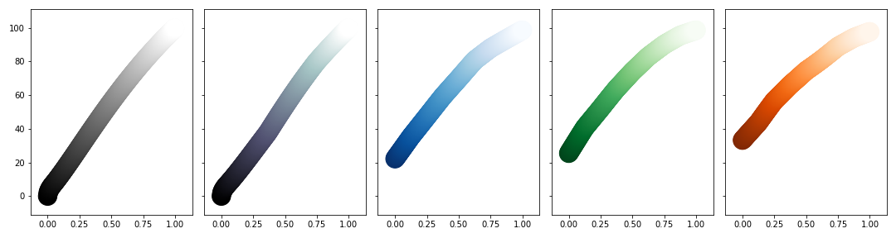

- matplotlib에서 custom colormap을 만들고 적용하는 방법입니다.
- 3부로 나누어 1부에 해당하는 본 글에서는 시각적 디자인을, 2~3부에서는 코드 위주로 정리합니다.
Matplotlib Custom Colormap
- 지난 글에는 크게 두 가지 그림이 등장합니다.
- 하나는 value에 따른 컬러맵 명도

- 또 하나는 여러 컬러맵이 적용된 한반도의 풍속 분포 그림입니다.
- 하나는 value에 따른 컬러맵 명도
- 이번 글에서는 이 그림들 중 첫 번째 그림이 그려진 과정을 코드로 살펴보겠습니다.
1. Value vs Lightness
이 그림은 기본적으로 공식 홈페이지의 그림들을 모방해서 그렸습니다.
- 원본 그림은 아래와 같습니다.

- 원본 그림은 아래와 같습니다.
제가 보기에 조금 아쉬운 부분이 있어서 수정을 했습니다.
- y축 label 위치 : 위로 밀려 붙어있음 → 중앙 고정
- x축 의미 : 컬러맵간 x범위가 겹쳐 혼란함 → 컬러맵 분리
- 일부 색상 불명확 : Lightness가 100에 가까울 때 안보임 → 윤곽선 삽입
1.1. Figure and Axes
그림의 틀
Figure와 데이터가 놓일 축공간Axes을 지정합니다.N개의 컬러맵을 동시에 표현할 준비를 합니다.1
2
3
4
5
6
7
8
9
10
11
12
13%matplotlib inline
import pandas as pd
import numpy as np
import matplotlib.pyplot as plt
N = 5 # 일단 5개로 시작합니다.
fig, axes = plt.subplots(ncols=N, figsize=(3*N, 4), sharey=True) # 3x4 크기 그림을 나열합니다.
for i, ax in axes:
ax.scatter([0,1], [0,1]) # dummy data입니다.
plt.tight_layout()
plt.show()y축 데이터는 맨 왼쪽 그림에만 표기할 준비를 합니다.
sharey=True를 적용해서 축공간들을 동기화합니다.- 두번째 이후 그림에서 y축을 없애고 범위를 통일합니다.
1.2. Data
- 데이터부터 자리를 잡아준 뒤에 거기에 맞게 그림을 꾸밉니다.
- 우리가 얹을 데이터는 특정 컬러맵에서 0~1 범위를 가지는 x가 표현하는 명도의 범위입니다.
- x의 범위를 설정하기 전에 숫자를 명도로 변환하는 함수를 먼저 정의해야 합니다.
- 공식 홈페이지에서 가져온 코드를 한번 자세히 들여다봅시다.
1.2.1 Data to Color, Color to Lightness
데이터 형식과 행렬 등으로 다소 지루할 수 있는 구간입니다.
- 읽기 힘들다면 아래 한 줄만 읽고 1.2.2. Plot Lightness of Data로 넘어가도 됩니다.
matplotlib의colormap은numpy.ndarray로 불러낼 수 있다.
Blues_r는 짙은 파랑부터 밝은 하늘색까지 변하는 컬러맵입니다.
1
2
3
4
5from matplotlib import cm
cmap = "Blues_r"
blues_r = cm.get_cmap(cmap)
print(type(blues_r))실행결과 :
LinearSegmentedColormap형식입니다.1
<class 'matplotlib.colors.LinearSegmentedColormap'>
표현하고자 하는 숫자를
( )에 넣어 붙여주면 색이 출력됩니다.1
2print(blues_r(0.5))
print(type(blues_r(0.5)))실행결과 :
tuple형식의 RGBA 데이터가 나옵니다.1
2(0.42274509803921567, 0.684075355632449, 0.8398923490965013, 1.0)
<class 'tuple'>여러 데이터를 List 형식으로 넣어주면 해당 색상이 나열됩니다.
1
2print(blues_r([0, 0.2, 0.4, 0.6, 0.8, 1]))
print(type(blues_r([0, 0.2, 0.4, 0.6, 0.8, 1])))실행결과 :
numpy.ndarray형식의 RGBA 데이터가 나옵니다.1
2
3
4
5
6
7[[0.03137255 0.18823529 0.41960784 1. ]
[0.09019608 0.39294118 0.67058824 1. ]
[0.29098039 0.5945098 0.78901961 1. ]
[0.57960784 0.77019608 0.87372549 1. ]
[0.81411765 0.88392157 0.94980392 1. ]
[0.96862745 0.98431373 1. 1. ]]
<class 'numpy.ndarray'>RGB 색상을 CIELAB으로 변환하기 위해
cspace_converter를 사용합니다.그리고 투명도를 담당하는 A(alpha)채널을 제외한 나머지 RGB만 입력합니다.
1
2
3
4
5
6
7from colorspacious import cspace_converter
rgb = blues_r([0, 0.2, 0.4, 0.6, 0.8, 1])[:, :3] # Data를 RGB로 변환
lab = cspace_converter("sRGB1", "CAM02-UCS")(rgb) # RGB를 CIELAB으로 변환
print(lab)
print(type(lab))실행결과 :
numpy.ndarray형식의 CIELAB 으로 변환됩니다.
이 중 첫번째 열이 Lightness $$L^*$$에 해당합니다.1
2
3
4
5
6
7[[ 22.18014584 -6.42929944 -23.01729555]
[ 42.46541635 -10.62409381 -25.68722564]
[ 61.34976829 -13.77753277 -21.06338743]
[ 78.52932851 -11.90227692 -14.08646179]
[ 90.10413892 -5.7820838 -9.58766874]
[ 98.62348915 -2.92558943 -3.50908208]]
<class 'numpy.ndarray'>주의 : $$Y = 0.2126R + 0.7152G + 0.0722B$$ 라는 공식이 있습니다.
- 여기서 구하는 $$Y$$는 휘도
Luminance로, 명도Lightness와는 엄밀히 말해 다릅니다. - 지금은 우리 눈이 받아들이는 밝기인 명도를 중심으로 이야기 중입니다.
- 혼동을 방지하기 위해 휘도는 잠시 접어두겠습니다.
- 여기서 구하는 $$Y$$는 휘도
1.2.2. Plot Lightness of Data
5가지 colormap에 0부터 1까지의 값을 입력하면서 데이터의 변화를 컬러맵으로 표시해봅시다.
scatter plot을 두껍게 겹쳐 그리는 방식으로 색상 변화를 표현하겠습니다.
1
2
3
4
5
6
7
8
9
10
11
12
13
14
15
16
17
18
19
20
21x = np.linspace(0.0, 1.0, 256) # 표현할 data를 0~1까지 256단계로 만듬
cmaps = ["gist_gray", "bone", "Blues_r", "Greens_r", "Oranges_r"] # 표현할 컬러맵 리스트
N = len(cmaps) # 입력받는 cmap 수에 따라 변경되도록 수정
fig, axes = plt.subplots(ncols=N, figsize=(3*N, 4), sharey=True)
for ax, cmap in zip(axes, cmaps): # axes마다 다른 cmap 적용
# cmaps를 함께 받도록 zip() 사용
rgb = cm.get_cmap(cmap)(x)[:, :3]
lab = cspace_converter("sRGB1", "CAM02-UCS")(rgb) # RGB 색상을 CIELAB으로 변경
y = lab[:, 0] # Lightness만 추출
ax.scatter(x, y, c=x, cmap=cmap, s=500) # plot data as colormap
# x : 0~1까지의 데이터
# y : 선택된 컬러맵에서 x에 해당하는 명도
# c : x를 색상으로 표현
# cmap : 입력받은 cmap 적용
plt.tight_layout()
plt.show()
공식 홈페이지의 그림과 비슷하게 출력되었습니다.
1.3. Controlling Figure Aesthetics
- 데이터를 얹었으니 이제 그림을 예쁘게 꾸며봅시다.
- 데이터 시각화에서 예쁘게라는 말은 시각적으로 아름답도록 그리는 것 만을 뜻하지 않습니다.
- 데이터를 인식하기 편하게라는 의미를 함께 가지고 있습니다.
- 축공간
Axes을 먼저 꾸미고, 데이터를 나중에 꾸미겠습니다.
1.3.1. Axes Aesthetics
- 축공간을 어떻게 하면 데이터를 잘 보여줄지 고민해 봤습니다.
- x와 y축의 숫자가 작습니다 → 키웁시다
- 윤곽선이 불필요합니다 → 지웁시다
- 그림의 의미를 모르겠습니다 → y label을 달아줍시다
- 컬러맵간 정량비교가 약합니다 → 눈금을 답시다
1.3.1.1. Larger Ticklabels
ax.scatter()아래에 다음 두 줄을 추가해줍니다.1
2ax.xaxis.set_tick_params(labelsize=20) # x축 눈금 글꼴 키우기
ax.yaxis.set_tick_params(labelsize=20) # y축 눈금 글꼴 키우기- 실행결과 : 글꼴이 커졌습니다.
1.3.1.2. Needless Spines Removal
1.3.1.3. $$y$$-label Placement
1.3.1.4. Grids On
맨 왼쪽 그림은 위
top와 오른쪽right만, 나머지는 왼쪽left까지 지워줍니다.첫 번째 축공간에 예외를 지정하기 위해
for ~ enumerate()를 사용합니다.1
2
3
4
5
6
7
8
9
10
11
12
13
14
15
16
17
18
19
20
21
22
23
24
25
26x = np.linspace(0.0, 1.0, 256)
cmaps = ["gist_gray", "bone", "Blues_r", "Greens_r", "Oranges_r"]
N = len(cmaps)
fig, axes = plt.subplots(ncols=N, figsize=(3*N, 4), sharey=True)
for i, (ax, cmap) in enumerate(zip(axes, cmaps)): # enumerate 도입
rgb = cm.get_cmap(cmap)(x)[:, :3]
lab = cspace_converter("sRGB1", "CAM02-UCS")(rgb)
y = lab[:, 0]
ax.scatter(x, y, c=x, cmap=cmap, s=500)
ax.xaxis.set_tick_params(labelsize=20)
ax.yaxis.set_tick_params(labelsize=20)
ax.spines['top'].set_visible(False) # 위쪽 spine 없애기
ax.spines['right'].set_visible(False) # 오른쪽 spine 없애기
ax.grid("on") # grid 보이기
if i == 0:
ax.set_ylabel("Lightness $L^*$", fontdict={"fontsize":24}) # y-label 달기
else:
ax.spines['left'].set_visible(False) # 2번째 이후 왼쪽 spine 없애기
plt.tight_layout()
plt.show()생각한대로 다 됐는데 생각보다 불편합니다.
- 데이터가 grid 뒤에 있어서 답답합니다.
- 공간이 좁습니다. 빡빡한 느낌이 듭니다.
- 컬러맵 윗부분 색상이 잘 보이지 않습니다.
- 컬러맵 이름을 모르겠습니다.
1.3.1.5. Axes Movement
1.3.1.6. Title Placement
남은 불만사항 중 Axes에 해당하는 두번째, 네번째 것을 적용합니다.
1
2
3
4
5
6
7
8
9
10
11
12
13
14
15
16
17
18
19
20
21
22
23
24
25
26
27
28
29x = np.linspace(0.0, 1.0, 256)
cmaps = ["gist_gray", "bone", "Blues_r", "Greens_r", "Oranges_r"]
N = len(cmaps)
fig, axes = plt.subplots(ncols=N, figsize=(3*N, 4), sharey=True)
for i, (ax, cmap) in enumerate(zip(axes, cmaps)):
rgb = cm.get_cmap(cmap)(x)[:, :3]
lab = cspace_converter("sRGB1", "CAM02-UCS")(rgb)
y = lab[:, 0]
ax.scatter(x, y, c=x, cmap=cmap, s=500)
ax.xaxis.set_tick_params(labelsize=20)
ax.yaxis.set_tick_params(labelsize=20)
ax.set_title(cmap, fontdict={"fontsize":24}, pad=24) # title 달기
ax.spines['top'].set_visible(False)
ax.spines['right'].set_visible(False)
ax.spines['bottom'].set_position(('outward', 10)) # spine 아래쪽으로 이동
ax.grid("on")
if i == 0:
ax.set_ylabel("Lightness $L^*$", fontdict={"fontsize":24})
ax.spines['left'].set_position(('outward', 10)) # spine 왼쪽으로 이동
else:
ax.spines['left'].set_visible(False)
plt.tight_layout()
plt.show()전체적인 틀은 한결 나아졌습니다.
1.3.2. Scatter Aesthetics
이제 데이터 부분을 수정해 봅시다.
- 데이터를 눈금 앞으로 옮기고 →
zorder사용 - 데이터에 윤곽선을 만들어주면 됩니다. → ???
- 데이터를 눈금 앞으로 옮기고 →
scatter plot 전체를 둘러싸는 윤곽선은 트릭이 필요합니다.
- scatter plot을 똑같이 하나 더 만듭니다.
- 새 scatter plot에 두꺼운 윤곽선을 두릅니다.
- 원래 그림의 아래에 깔면 결과적으로 뭉쳐진 알갱이들을 둘러싸는 윤곽선이 그려집니다.
- 파워포인트에도 적용할 수 있는 트릭입니다.
재사용을 위해 함수화합니다.
- 컬러맵 리스트와 각 제목을 입력으로 받습니다.
- 제목이 없으면 컬러맵 이름을 제목으로 사용합니다.
- 파일명을 입력받아 파일로 저장합니다.
최종 코드와 결과물입니다.
1
2
3
4
5
6
7
8
9
10
11
12
13
14
15
16
17
18
19
20
21
22
23
24
25
26
27
28
29
30
31
32
33
34
35
36
37
38
39
40
41def plot_L(cmaps, titles=None, filename=None):
N = len(cmaps)
assert N > 0 # 최소한 1개의 컬러맵이 있어야 함.
if titles==None: # titles 입력이 없으면 cmap 이름을 title로 사용
titles = [str(cmap) for cmap in cmaps] # string이 아닐 경우를 대비해 string으로 변환
if filename==None: # filename 입력이 없으면 cmap 명단을 이름으로 사용
filename = "L_" + "_".join(titles) + ".png"
x = np.linspace(0.0, 1.0, 256)
fig, axes = plt.subplots(ncols=N, figsize=(3*N, 4), sharey=True)
for i, (ax, cmap, title) in enumerate(zip(axes, cmaps, titles)):
rgb = cm.get_cmap(cmap)(x)[:, :3]
lab = cspace_converter("sRGB1", "CAM02-UCS")(rgb)
y = lab[:, 0]
ax.scatter(x, y, c=x, cmap=cmap, s=500, zorder=3) # Data
ax.scatter(x, y, c="k", s=550, zorder=2) # outline
ax.plot(x, y, c="k", zorder=4) # center line
ax.xaxis.set_tick_params(labelsize=20)
ax.yaxis.set_tick_params(labelsize=20)
ax.set_title(title, fontdict={"fontsize":24}, pad=24)
ax.spines['top'].set_visible(False)
ax.spines['right'].set_visible(False)
ax.spines['bottom'].set_position(('outward', 10))
ax.grid("on")
if i == 0:
ax.set_ylabel("Lightness $L^*$", fontdict={"fontsize":24})
ax.spines['left'].set_position(('outward', 10))
else:
ax.spines['left'].set_visible(False)
plt.tight_layout()
plt.savefig(filename, dpi=150) # 고해상도 저장
plt.show()
plot_L(['gist_gray', 'bone', 'Blues_r', 'Greens_r', 'Oranges_r'])
- 필요한 그림을 그릴 수 있습니다.
1
plot_L(["rainbow", "jet", "gnuplot", "brg", "cubehelix"], filename="L_rainbow")

- 본 글에 사용된 코드는 이 곳에서 다운받을 수 있습니다.